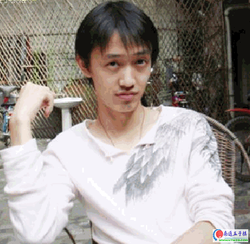

黄圣明
#1 黄圣明 作者：有志青年 发表时间：2007-2-24 19:19:03

五子棋不等于全部
五子棋里有很多人叫小白，所以当老姚说这期访谈做小白时，我脑子里出现了N多个叫小白的棋手，我问：有个叫百河愁的人，大家都叫他小白，那是你吗？
“那个不是偶，不过我认识，也是成都的 。”
“自由自在”里面的那个小白呢？
“ 不是我 ，‘非洲小白脸’也不是我 ，教室的little white 还是不是我 。”
尽管如此，我还是习惯将黄圣明叫做小白。 05年的浙江赛，小白在众多A组高手中脱颖而出，获得了亚军，这样的状态让他对当年的全国赛有了信心，在报名之后，小白专心准备了一个月，准备10月1号赴天津参赛。10月1号那天，小白去了成都火车站，他去成都火车站，是为了退票。 原来小白恋爱了，女朋友希望他放弃这次比赛，留下来陪她。
你说是为了爱情？你参加五子棋全国赛跟爱情并不矛盾啊？
“五子棋不等于全部，它只是我生活的一个调味品。五子棋不能陪伴人一辈子，但你和你所爱的人要相处一辈子。 ”
你们现在怎样？
“因为其他现实的原因，我们不合适，现在分手了。”
小白告诉我，由于临时缺席，那年全国赛他的名次是最后一名：第58名。他说这话时，笑容明净而又灿烂，这个第58名对小白来说，仅仅只是人生经历中一个小小的符号。
网棋情结
小白在成都理工大学读信息工程专业，学校一个经常带他的五子高手毕业后，很长一段时间，小白就自己在联众去找棋下。小白的经历和大多数五子棋手一样，走过了现实 — 网络 — 现实这样一条学习、提高的过程。
在联众，他认识了对他影响很大的棋手任继航，两人从网上下到现实，一个攻击，一个防守，就这样练了起来。
任继航是四川另一个比较有名的棋手，曾和小白一起参加了04年的浙江邀请赛，那届比赛任继航第11名，小白第15名。
小白说02-03年联众的五子很强，下棋时间的设置也很合适，那会五子棋很多门派都有他的ID，“双刃剑”、“ 冰晶之魂”、“ 明教”、“ 黄易 ”等等，那会大名鼎鼎的“鲸鱼 ”（吴镝）、“呆呆”（绕肇平）、“ 小龙女”（李非）都在里面下五子。
小白说后来因服务器不稳定，再加上QQ游戏的进入，导致联众五子人气锐减，这是一件令人惋惜的事。
可以这样说， 联众作为较早的网络棋牌游戏，以它强大的能量，和既经济又有效的锻炼手段，对一大批热爱棋类项目的青少年产生过很大的影响。以至于很多人至今都有一种挥之不去的联众情结。
小白又去了ORC；他说ORC的水平最高，各种规则都有，只是由于是专业五子棋网站，知道的人相对要少些。QQ的人气和现在的讲课都很好，可惜时间问题和人数上有限制，让他很不习惯
。
师傅领进门
谈到崔悦与肖斌这两个人，小白很有感情。他说自己很喜欢“双刃剑”里面的崔悦老师。
“记得02年我在北京，一天晚上喝了酒，我去崔悦老师家，我说下棋，他说他喝多了，怕我防不住 ，当时02年的崔老师还是超强的…… 这盘棋最后自然也就没下成了呀。”
你喜欢他为人？下棋还是讲课？
“喜欢崔悦老师的讲棋，他不会告诉你该怎么走的，他不讲具体变化，而是思路 。他说比赛比的就是心态和对局者的想法。ANDO说过：给他一个先手，就是必胜。崔悦老师告诉我要培养自己的风格，一个棋手一定要有自己的行棋风格，并保持攻击的欲望和必胜的信念，永不言败。
“从肖斌那儿学到了花月和蒲月，在没怎学好时就跑了”，小白说他从师傅那里学到的是对五子棋的态度，小白认为师傅肖斌这一点说得很实际 ：“五子棋要是能职业化，或者是半职业化的话，让新人来做更有利于推动和发展，现